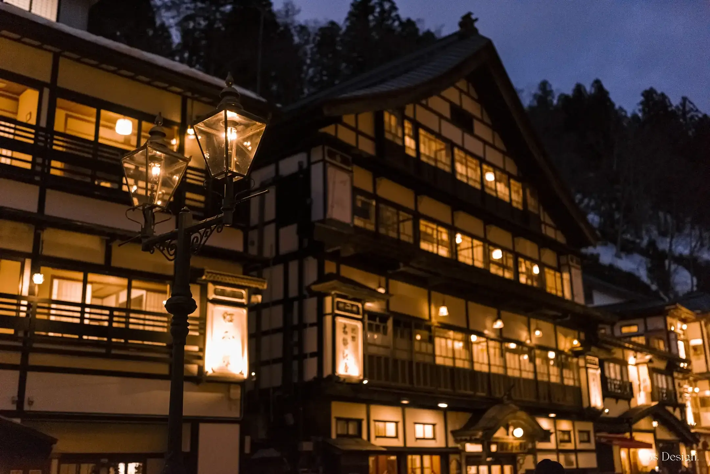
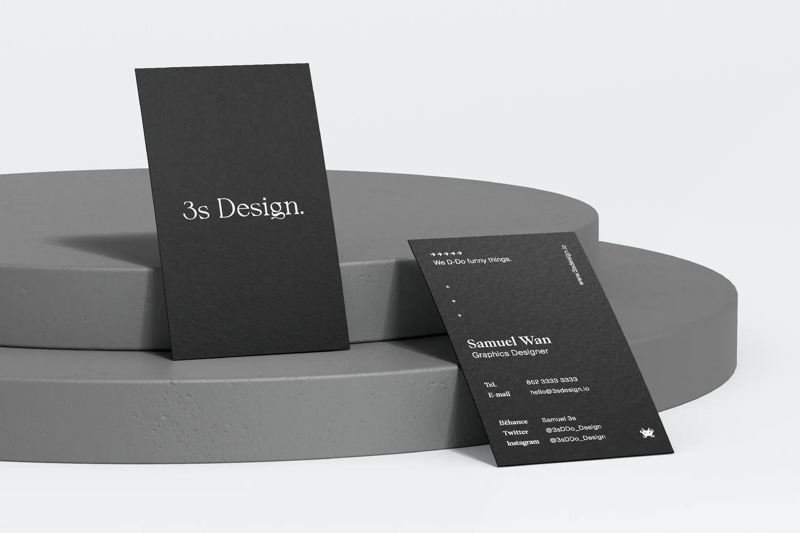
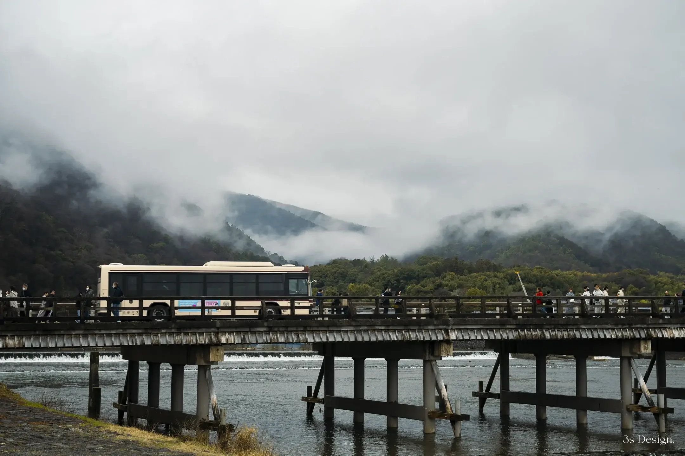

3s Design featured projects

Featured / Photography
Ginzan Onsen
Japan Winter Trip · Yamagata, 2023
Explore ↗

02 / 03
3s Design
Hong Kong
Featured / Visual identity
3s Design.
Brand identity and printed matter · Hong Kong, 2025
Explore ↗

Featured / Photography
Saga Arashiyama
Japan Spring Trip · Kyoto, 2024
Explore ↗